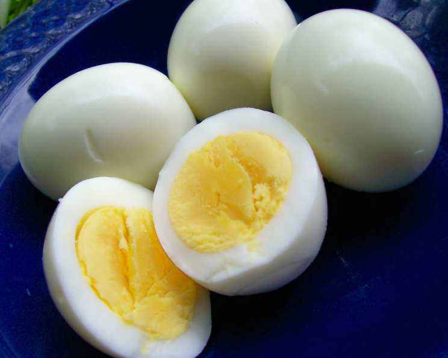

Perfect Boiled Egg Recipe

Description
A perfectly boiled egg is a simple yet versatile kitchen staple. Whether you prefer a soft, runny yolk or a fully cooked center, this recipe will guide you to achieve the perfect boiled egg every time.
Enjoy boiled eggs as a snack, breakfast option, or as a nutritious addition to salads and other dishes.
Ingredients
- 4 large eggs
- Water (enough to cover the eggs)
- Ice (for an ice bath)
Steps
- Place the eggs in a saucepan and cover them with water by about an inch.
- Bring the water to a rolling boil over medium-high heat.
- Once boiling, reduce the heat to low and simmer according to your preference:
- Soft-boiled: 4-5 minutes
- Medium-boiled: 7-8 minutes
- Hard-boiled: 10-12 minutes
- Immediately transfer the eggs to an ice bath to stop the cooking process and make peeling easier.
- Peel the eggs under running water for best results.
- Serve warm or store in the refrigerator for up to one week.
Back to homepage